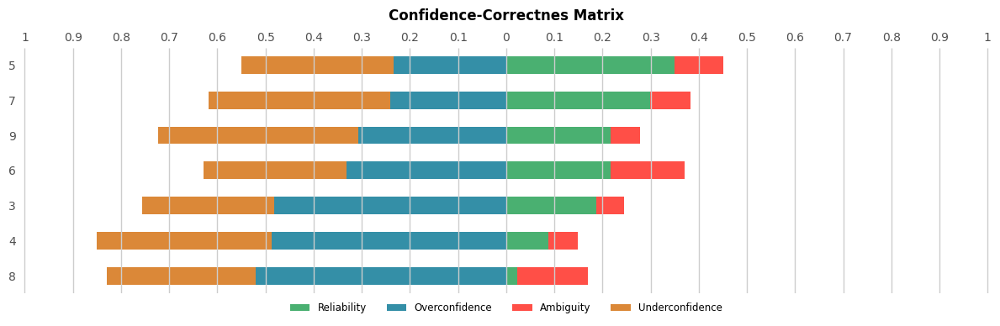
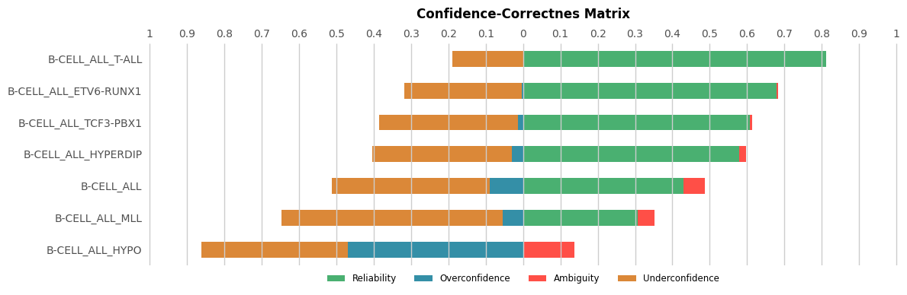

[27]:
from confidence_correctness_matrix import *
from ucimlrepo import fetch_ucirepo
from sklearn.naive_bayes import GaussianNB
from sklearn.ensemble import RandomForestClassifier
from sklearn.model_selection import StratifiedKFold
import numpy as np
import pandas as pd
from matplotlib import pyplot as plt
Without Cross-Validation
Initialization and Training
[28]:
# Loads the iris dataset
iris = fetch_ucirepo(id=53)
X, y = iris.data.features, iris.data.targets.squeeze()
classes = np.unique(y)
print(f"Classes: {classes}\n")
np.set_printoptions(suppress=True, formatter={'float': '{: 0.3f}'.format})
# Training and predict
model = GaussianNB().fit(X, y)
y_score = model.predict_proba(X)
Classes: ['Iris-setosa' 'Iris-versicolor' 'Iris-virginica']
Probabilistic Confusion Matrix
[29]:
# Calculates the probabilistic confusion matrix and the probabilistic metrics
prob_conf_matrix = prob_confusion_matrix(y, y_score, labels=classes)
prob_acc = prob_accuracy_score(y, y_score)
prob_b_acc = prob_balanced_accuracy_score(y, y_score)
prob_prec = prob_precision_score(y, y_score, average="micro")
prob_recall = prob_recall_score(y, y_score, average="macro")
prob_f1 = prob_f1_score(y, y_score, average="weighted")
prob_cohen_kappa = prob_cohen_kappa_score(y, y_score)
prob_m_corrcoef = prob_matthews_corrcoef(y, y_score)
print(f"Probabilistic confusion matrix:\n {prob_conf_matrix}\n")
print(f"Acc* = {prob_acc:.3f}, B_acc* = {prob_b_acc:.3f}, Prec* = {prob_prec:.3f}, MCC* = {prob_m_corrcoef:.3f}, Recall* = {prob_recall:.3f}, F1* = {prob_f1:.3f}, Cohen Kappa* = {prob_cohen_kappa:.3f}\n")
Probabilistic confusion matrix:
[[ 50.000 0.000 0.000]
[ 0.000 46.060 3.940]
[ 0.000 3.930 46.070]]
Acc* = 0.948, B_acc* = 0.948, Prec* = 0.948, MCC* = 1.000, Recall* = 0.948, F1* = 0.948, Cohen Kappa* = 0.927
High-Confidence and Low-Confidence Matrices
[30]:
# Calculates the high-confidence and low-confidence matrices and their lambda values
H, L = confidence_matrices(y, y_score)
lambda_H, lambda_L = confidence_weights(y, y_score)
print(f"High-Confidence matrix:\n {H}")
print(f"lambda_H = {lambda_H:.3f}\n")
print(f"Low-Confidence matrix:\n {L}")
print(f"lambda_L = {lambda_L:.3f}\n")
High-Confidence matrix:
[[ 50.000 0.000 0.000]
[ 0.000 45.374 2.314]
[ 0.000 2.644 45.715]]
lambda_H = 0.974
Low-Confidence matrix:
[[ 0.000 0.000 0.000]
[ 0.000 0.686 1.626]
[ 0.000 1.285 0.356]]
lambda_L = 0.026
Class-independent Confidence-Correctness Matrix
[31]:
# Calculates the class-independent Confidence-Correctnes matrix
ci_confCorrM = confidence_correctness_matrix(y, y_score, class_specific=False)
print("Class-independent Confidence-Correctnes matrix values:")
for key, value in ci_confCorrM.items():
print(f"{key}: {value:.3f}")
Class-independent Confidence-Correctnes matrix values:
Reliability: 0.941
Overconfidence: 0.033
Underconfidence: 0.019
Ambiguity: 0.007
Class-specific Confident-Correctness Matrix
[32]:
# Loads wine-quality the dataset
wine_quality = fetch_ucirepo(id=186)
X, y = wine_quality.data.features, wine_quality.data.targets.squeeze()
classes = np.unique(y)
print(f"Classes: {classes}\n")
np.set_printoptions(suppress=True, formatter={'float': '{: 0.3f}'.format})
# Training and predict
model = GaussianNB().fit(X, y)
y_score = model.predict_proba(X)
# Calculates the class-specific Confidence-Correctnes matrix
cd_confCorrM = confidence_correctness_matrix(y, y_score, class_specific=True)
print("\nClass-dependent Confidence-Correctnes matrix values:")
for key, value in cd_confCorrM.items():
print(f"\nClass {key}")
for key2, value2 in value.items():
print(f"{key2}: {value2:.3f}")
Classes: [3 4 5 6 7 8 9]
Class-dependent Confidence-Correctnes matrix values:
Class 3
Reliability: 0.188
Overconfidence: 0.482
Ambiguity: 0.057
Underconfidence: 0.274
Class 4
Reliability: 0.088
Overconfidence: 0.487
Ambiguity: 0.061
Underconfidence: 0.363
Class 5
Reliability: 0.350
Overconfidence: 0.235
Ambiguity: 0.100
Underconfidence: 0.315
Class 6
Reliability: 0.216
Overconfidence: 0.332
Ambiguity: 0.155
Underconfidence: 0.297
Class 7
Reliability: 0.299
Overconfidence: 0.240
Ambiguity: 0.083
Underconfidence: 0.377
Class 8
Reliability: 0.023
Overconfidence: 0.520
Ambiguity: 0.147
Underconfidence: 0.310
Class 9
Reliability: 0.217
Overconfidence: 0.307
Ambiguity: 0.060
Underconfidence: 0.415
Class-specific Confident-Correctness Matrix Bar Chart
[33]:
# Plots the class-dependent Confidence-Correctnes matrix
plot_confidence(y, y_score)

With Cross-Validation
Initialization and Training
[34]:
# Parameters
K = 10
class_col = "type"
file = "Leukemia_GSE28497.csv"
# Reads the file
dataset = pd.read_csv(file)
# Prepares the dataset
dataset = dataset.drop(columns="samples")
X = dataset.drop(columns=class_col)
y = dataset[class_col]
classes = np.unique(y)
print(f"Classes: {classes}\n")
np.set_printoptions(suppress=True, formatter={'float': '{: 0.3f}'.format})
# Initializes the variables for the results
aggregated_y = np.array([])
aggregated_y_score = np.empty((0, len(np.unique(y))))
# Initializes the validation model
kf = StratifiedKFold(K, random_state=0, shuffle=True)
for train, test in kf.split(X, y):
# Splits in train and test
X_train, y_train = X.iloc[train], y.iloc[train]
X_test, y_test = X.iloc[test], y.iloc[test]
# Training and predict
model = RandomForestClassifier(random_state=0).fit(X_train, y_train)
y_score = model.predict_proba(X_test)
# Aggregates y_test and the results
aggregated_y = np.concatenate((aggregated_y, y_test)).flatten()
aggregated_y_score = np.concatenate((aggregated_y_score, y_score))
Classes: ['B-CELL_ALL' 'B-CELL_ALL_ETV6-RUNX1' 'B-CELL_ALL_HYPERDIP'
'B-CELL_ALL_HYPO' 'B-CELL_ALL_MLL' 'B-CELL_ALL_T-ALL'
'B-CELL_ALL_TCF3-PBX1']
Probabilistic Confusion Matrix
[35]:
# Calculates the probabilistic confusion matrix and the probabilistic metrics
prob_conf_matrix = prob_confusion_matrix(aggregated_y, aggregated_y_score, labels=classes)
prob_acc = prob_accuracy_score(aggregated_y, aggregated_y_score)
prob_b_acc = prob_balanced_accuracy_score(aggregated_y, aggregated_y_score)
prob_prec = prob_precision_score(aggregated_y, aggregated_y_score, average="micro")
prob_recall = prob_recall_score(aggregated_y, aggregated_y_score, average="macro")
prob_f1 = prob_f1_score(aggregated_y, aggregated_y_score, average="weighted")
prob_cohen_kappa = prob_cohen_kappa_score(aggregated_y, aggregated_y_score)
prob_m_corrcoef = prob_matthews_corrcoef(aggregated_y, aggregated_y_score)
print(f"Probabilistic confusion matrix:\n {prob_conf_matrix}\n")
print(f"Acc* = {prob_acc:.3f}, B_acc* = {prob_b_acc:.3f}, Prec* = {prob_prec:.3f}, MCC* = {prob_m_corrcoef:.3f}, Recall* = {prob_recall:.3f}, F1* = {prob_f1:.3f}, Cohen Kappa* = {prob_cohen_kappa:.3f}\n")
Probabilistic confusion matrix:
[[ 36.080 8.720 10.890 7.970 4.110 3.190 3.040]
[ 8.580 36.150 2.770 2.550 0.780 1.070 1.100]
[ 10.730 2.620 30.440 3.620 1.520 1.000 1.070]
[ 7.820 1.810 3.170 2.490 1.090 0.730 0.890]
[ 4.280 0.840 1.670 1.830 5.990 1.320 1.070]
[ 3.440 1.050 1.220 0.940 1.270 37.310 0.770]
[ 3.520 1.160 0.910 1.160 1.080 0.660 13.510]]
Acc* = 0.576, B_acc* = 0.526, Prec* = 0.576, MCC* = 0.302, Recall* = 0.526, F1* = 0.579, Cohen Kappa* = 0.664
High-Confidence and Low-Confidence Matrices
[36]:
# Calculates the high-confidence and low-confidence matrices and their lambda values
H, L = confidence_matrices(aggregated_y, aggregated_y_score)
lambda_H, lambda_L = confidence_weights(aggregated_y, aggregated_y_score)
print(f"High-Confidence matrix:\n {H}")
print(f"lambda_H = {lambda_H:.3f}\n")
print(f"Low-Confidence matrix:\n {L}")
print(f"lambda_L = {lambda_L:.3f}\n")
High-Confidence matrix:
[[ 31.800 3.390 2.870 0.000 0.000 0.340 0.000]
[ 0.230 35.940 0.000 0.000 0.000 0.000 0.000]
[ 1.530 0.000 29.560 0.000 0.000 0.000 0.000]
[ 6.690 0.860 0.900 0.000 0.000 0.000 0.000]
[ 0.930 0.000 0.000 0.000 5.210 0.000 0.000]
[ 0.000 0.000 0.000 0.000 0.000 37.310 0.000]
[ 0.300 0.000 0.000 0.000 0.000 0.000 13.380]]
lambda_H = 0.609
Low-Confidence matrix:
[[ 4.280 5.330 8.020 7.970 4.110 2.850 3.040]
[ 8.350 0.210 2.770 2.550 0.780 1.070 1.100]
[ 9.200 2.620 0.880 3.620 1.520 1.000 1.070]
[ 1.130 0.950 2.270 2.490 1.090 0.730 0.890]
[ 3.350 0.840 1.670 1.830 0.780 1.320 1.070]
[ 3.440 1.050 1.220 0.940 1.270 0.000 0.770]
[ 3.220 1.160 0.910 1.160 1.080 0.660 0.130]]
lambda_L = 0.391
Class-independent Confidence-Correctness Matrix
[37]:
# Calculates the class-independent Confidence-Correctnes matrix
ci_confCorrM = confidence_correctness_matrix(aggregated_y, aggregated_y_score, class_specific=False)
print("Class-independent Confidence-Correctnes matrix values:")
for key, value in ci_confCorrM.items():
print(f"{key}: {value:.3f}")
Class-independent Confidence-Correctnes matrix values:
Reliability: 0.545
Overconfidence: 0.064
Underconfidence: 0.359
Ambiguity: 0.031
Class-specific Confident-Correctness Matrix
[38]:
# Calculates the class-specific Confidence-Correctnes matrix
cd_confCorrM = confidence_correctness_matrix(aggregated_y, aggregated_y_score, class_specific=True)
print("\nClass-dependent Confidence-Correctnes matrix values:")
for key, value in cd_confCorrM.items():
print(f"\nClass {key}")
for key2, value2 in value.items():
print(f"{key2}: {value2:.3f}")
Class-dependent Confidence-Correctnes matrix values:
Class B-CELL_ALL
Reliability: 0.430
Overconfidence: 0.089
Ambiguity: 0.058
Underconfidence: 0.423
Class B-CELL_ALL_ETV6-RUNX1
Reliability: 0.678
Overconfidence: 0.004
Ambiguity: 0.004
Underconfidence: 0.314
Class B-CELL_ALL_HYPERDIP
Reliability: 0.580
Overconfidence: 0.030
Ambiguity: 0.017
Underconfidence: 0.373
Class B-CELL_ALL_HYPO
Reliability: 0.000
Overconfidence: 0.469
Ambiguity: 0.138
Underconfidence: 0.392
Class B-CELL_ALL_MLL
Reliability: 0.306
Overconfidence: 0.055
Ambiguity: 0.046
Underconfidence: 0.593
Class B-CELL_ALL_T-ALL
Reliability: 0.811
Overconfidence: 0.000
Ambiguity: 0.000
Underconfidence: 0.189
Class B-CELL_ALL_TCF3-PBX1
Reliability: 0.608
Overconfidence: 0.014
Ambiguity: 0.006
Underconfidence: 0.372
Class-specific Confident-Correctness Matrix Bar Chart
[39]:
# Plots the class-specific Confidence-Correctnes matrix
plot_confidence(aggregated_y, aggregated_y_score)
